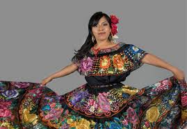
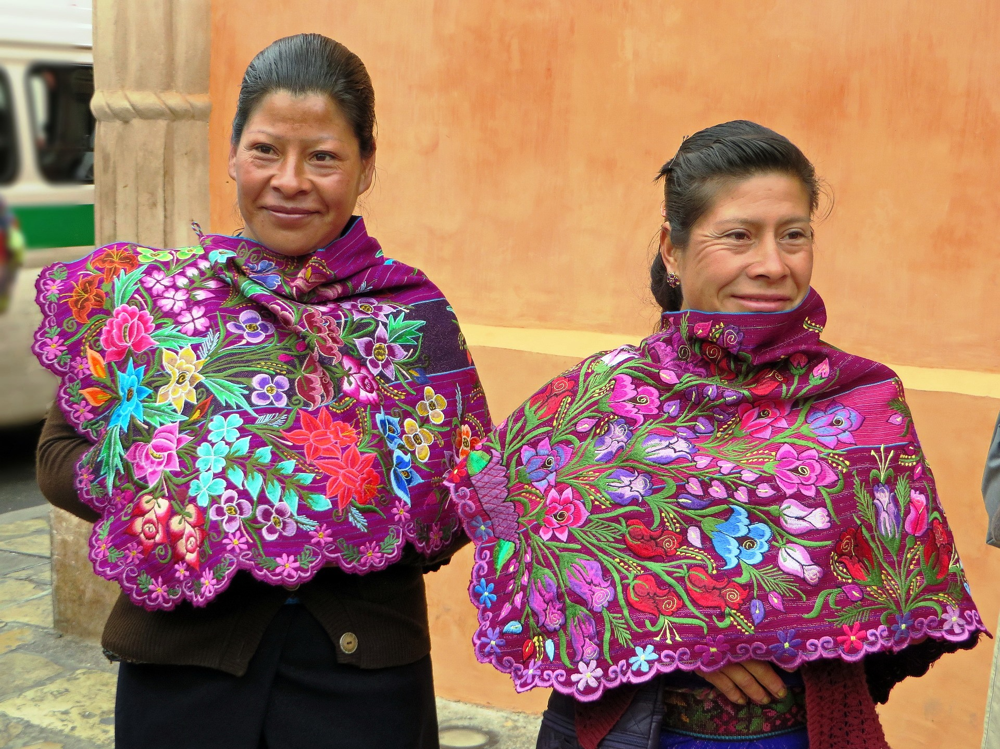

La gente de Chiapas es conocida por su diversidad cultural, ya que en el estado habitan numerosos grupos indígenas como los tzotziles, tzeltales, zoques, lacandones, entre otros, quienes conservan con orgullo sus lenguas, costumbres y tradiciones. Esta riqueza cultural se refleja en su vestimenta tradicional, que varía según la región, pero en general se caracteriza por ser colorida y estar hecha a mano con técnicas ancestrales de tejido en telar de cintura. Uno de los trajes típicos más representativos es el de las mujeres de Chiapa de Corzo, quienes usan una blusa y falda negras adornadas con flores de colores bordadas a mano, conocido como el traje de "chiapaneca", que suele usarse en fiestas importantes como la de los Parachicos. Los hombres también usan ropa tradicional en celebraciones, con sombreros de palma, camisas blancas y listones de colores. Estos trajes no solo son símbolo de identidad, sino también una forma de arte que refleja la historia y el alma de los pueblos chiapanecos.
